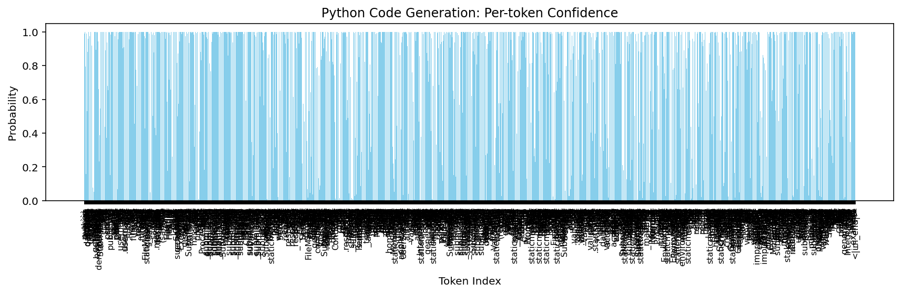
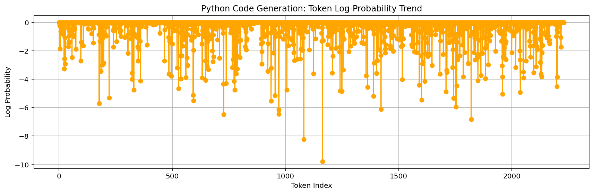
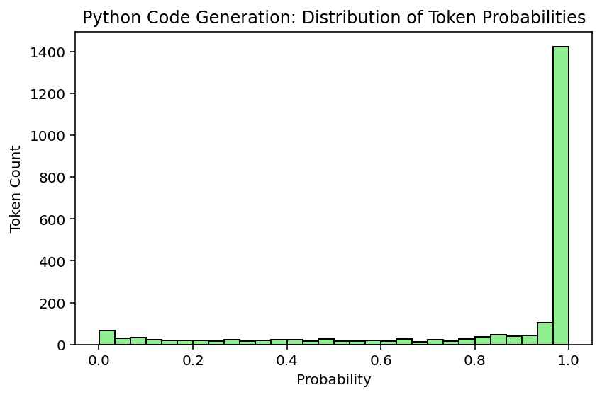
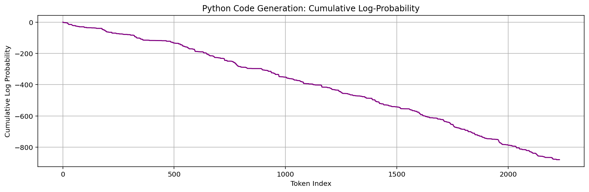

LLM Code Generation Report #1
Selected User Stories
As a Data user, I want to have the 12-19-2017 deletions processed.
As a UI designer, I want to redesign the Resources page, so that it matches the new Broker design styles.
As a UI designer, I want to report to the Agencies about user testing, so that they are aware of their contributions to making Broker a better UX.
As a UI designer, I want to move on to round 2 of DABS or FABS landing page edits, so that I can get approvals from leadership.
As a UI designer, I want to move on to round 2 of Homepage edits, so that I can get approvals from leadership.
As a UI designer, I want to move on to round 3 of the Help page edits, so that I can get approvals from leadership.
As a Developer , I want to be able to log better, so that I can troubleshoot issues with particular submissions and functions.
As a Developer, I want to add the updates on a FABS submission to be modified when the publishStatus changes, so that I know when the status of the submission has changed.
As a DevOps engineer, I want New Relic to provide useful data across all applications.
As a UI designer, I want to move on to round 2 of the Help page edits, so that I can get approvals from leadership.
As a UI designer, I want to move on to round 2 of Homepage edits, so that I can get approvals from leadership.
As a Broker user, I want to Upload and Validate the error message to have accurate text.
As a Broker user, I want the D1 file generation to be synced with the FPDS data load, so that I don't have to regenerate a file if no data has been updated.
As a Website user, I want to access published FABS files, so that I can see the new files as they come in.
As an owner, I want to be sure that USAspending only send grant records to my system.
As a Developer, I want to update the Broker validation rule table to account for the rule updates in DB-2213.
As a Developer, I want to add the GTAS window data to the database, so that I can ensure the site is locked down during the GTAS submission period.
As a Developer, I want D Files generation requests to be managed and cached, so that duplicate requests do not cause performance issues.
As a user, I want to access the raw agency published files from FABS via USAspending.
As an Agency user, I want to be able to include a large number of flexfields without performance impact.
As a Broker user, I want to help create content mockups, so that I can submit my data efficiently.
As a UI designer, I want to track the issues that come up in Tech Thursday, so that I know what to test and what want s to be fixed.
As an Owner, I want to create a user testing summary from the UI SME, so that I can know what UI improvements we will follow through on.
As a UI designer, I want to begin user testing, so that I can validate stakeholder UI improvement requests.
As a UI designer, I want to schedule user testing, so that I can give the testers advanced notice to ensure buy-in.
As an Owner, I want to design a schedule from the UI SME, so that I know the potential timeline of the UI improvements wanted.
As an Owner, I want to design an audit from the UI SME, so that I know the potential scope of the UI improvements want ed.
As a Developer, I want to prevent users from double publishing FABS submissions after refreshing, so that there are no duplicates.
As an data user, I want to receive updates to FABS records.
As an Agency user, I want to be able to include a large number of flexfields without performance impact.
As a Developer , I want to update the FABS sample file to remove FundingAgencyCode after FABS is updated to no longer require the header.
As an agency user, I want to ensure that deleted FSRS records are not included in submissions.
As a website user, I want to see updated financial assistance data daily.
As a user, I want the publish button in FABS to deactivate after I click it while the derivations are happening, so that I cannot click it multiple times for the same submission.
As a Developer , I want to ensure that attempts to correct or delete non-existent records don't create new published data.
As an Owner, I want to reset the environment to only take Staging MAX permissions, so that I can ensure that the FABS testers no longer have access.
As a user, I want the flexfields in my submission file to appear in the warning and error files when the only error is a missing required element.
As a user, I want to have accurate and complete data related to PPoPCode and PPoPCongressionalDistrict.
As an agency user, I want the FABS validation rules to accept zero and blank for loan records.
As an Agency user, I want FABS deployed into production, so I can submit my Financial Assistance data.
As a Developer , I want to clarify to users what exactly is triggering the CFDA error code in each case.
As an agency user, I want to be confident that the data coming from SAM is complete.
As a Developer , I want my domain models to be indexed properly, so that I can get validation results back in a reasonable amount of time.
As an agency user, I want the FABS validation rules to accept zero and blank for non-loan records.
As a broker team member, I want to make some updates to the SQL codes for clarity.
As an agency user, I want to have all derived data elements derived properly.
As a broker team member, I want to add the 00***** and 00FORGN PPoPCode cases to the derivation logic.
As a data user, I want to see the office names derived from office codes, so that I can have appropriate context for understanding them.
As a broker user, I want the historical FABS loader to derive fields, so that my agency codes are correct in the PublishedAwardFinancialAssistance table.
As a broker team member, I want to ensure the Broker resources, validations, and P&P pages are updated appropriately for the launch of FABS and DAIMS v1.1.
As a Developer, I want the data loaded from historical FABS to include the FREC derivations, so that I can have consistent FREC data for USASpending.gov.
As a user, I don't want to see NASA grants displayed as contracts.
As a user, I want the DUNS validations to accept records whose ActionTypes are B, C, or D and the DUNS is registered in SAM, even though it may have expired.
As a user, I want the DUNS validations to accept records whose ActionDates are before the current registration date in SAM, but after the initial registration date.
As a broker team member, I want to derive FundingAgencyCode, so that the data quality and completeness improves.
As an agency user, I want the maximum length allowed for LegalEntityAddressLine3 to match Schema v1.1.
As an agency user, I want to use the schema v1.1 headers in my FABS file.
As a agency user, I want to map the FederalActionObligation properly to the Atom Feed.
As a Broker user, I want to have PPoPZIP+4 work the same as the Legal Entity ZIP validations.
As a FABS user, I want to link the SAMPLE FILE on the "What you want to submit" dialog to point to the correct file, so that I have an accurate reference for my agency submissions.
As an Agency user, I want FPDS data to be up-to-date daily.
As a user, I want to access the raw agency published files from FABS via USAspending.
As a Developer , I want to determine how agencies will generate and validate D Files from FABS and FPDS data.
As a user, I want to generate and validate D Files from FABS and FPDS data.
As an Agency user, I want the header information box to show updated date AND time, so that I know when it was updated.
As an Agency user, I want to receive a more helpful file-level error when I upload a file with the wrong extension.
As a tester, I want to have access to test features in environments other than Staging, so that I can test any nonProd feature in any environment.
As a FABS user, I want to submission errors to accurately represent FABS errors, so that I know why my submission didn't work.
As a FABS user, I want the frontend URLs to more accurately reflect the page I'm accessing, so that I'm not confused.
As an Agency user, I want all historical Financial Assistance data loaded for FABS go-live.
As a Developer , I want the historical FPDS data loader to include both extracted historical data and FPDS feed data.
As an Agency user, I want historical FPDS data loaded.
As an Agency user, I want to accurately see who created a submission, so that I'm not confused about who last updated a submission.
As an agency user, I want to get File F in the correct format.
As an Agency user, I want to better understand my file-level errors.
As a Developer , I want to provide FABS groups that function under the FREC paradigm.
As a tester, I want to ensure that FABS is deriving fields properly through a robust test file plus a follow up check.
As an owner, I only want zero-padded fields, so that I can justify padding.
As a Broker user, I want to submit records for individual recipients without receiving a DUNS error.
As a user, I want more information about how many rows will be published prior to deciding whether to publish.
As a Developer, I want to prevent duplicate transactions from being published and deal with the time gap between validation and the publishing decision.
As a FABS user, I want to submit a citywide as a PPoPZIP and pass validations.
As a Broker user, I want to have updated error codes that accurately reflect the logic and provide enough information, so that I can fix my submission.
As an agency user, I want to leave off the last 4 digits of the ZIP without an error, so that I can complete my submissions.
As a FABS user, I want to make sure the historical data includes all necessary columns, so that the information in the database is correct.
As a data user, I want to access two additional fields from the FPDS data pull.
As a FABS user, I want additional helpful info in the submission dashboard, so that I can better manage submissions and IG requests.
As a FABS user, I want to download the uploaded FABS file, so that I can get the uploaded file.
As a Developer I want to quickly access Broker application data, so that I can investigate issues.
As a Developer , I want to determine the best way to load historical FPDS data, so that I can load all FPDS data since 2007.
As a FABS user, I want the language on FABS pages to be appropriate for me, so that I am not confused.
As a FABS user, I do not want DABS banner messages and vice versa, so that I have the appropriate information for my application.
As a FABS user, I want to have read-only access to DABS, so that I can view DABS pages without wanting two sets of permissions.
As a FABS user, I want to have my validations run in a reasonable amount of time.
As a FABS user, I want to see correct status labels on the Submission Dashboard, so that I can quickly see my submission history.
As an agency user, I want to know when the submission periods start and end, so that I know when the submission starts and ends.
As an agency user, I want a landing page to navigate to either FABS or DABS pages, so that I can access both sides of the site.
As an agency user, I want to submit my data elements surrounded by quotation marks, so that Excel won't strip off leading and trailing zeroes.
Prompt Sent to LLM
Generate fully functional Python code that implements the following user stories. The code should realistically reflect the described functionality.
As a Data user, I want to have the 12-19-2017 deletions processed.
As a UI designer, I want to redesign the Resources page, so that it matches the new Broker design styles.
As a UI designer, I want to report to the Agencies about user testing, so that they are aware of their contributions to making Broker a better UX.
As a UI designer, I want to move on to round 2 of DABS or FABS landing page edits, so that I can get approvals from leadership.
As a UI designer, I want to move on to round 2 of Homepage edits, so that I can get approvals from leadership.
As a UI designer, I want to move on to round 3 of the Help page edits, so that I can get approvals from leadership.
As a Developer , I want to be able to log better, so that I can troubleshoot issues with particular submissions and functions.
As a Developer, I want to add the updates on a FABS submission to be modified when the publishStatus changes, so that I know when the status of the submission has changed.
As a DevOps engineer, I want New Relic to provide useful data across all applications.
As a UI designer, I want to move on to round 2 of the Help page edits, so that I can get approvals from leadership.
As a UI designer, I want to move on to round 2 of Homepage edits, so that I can get approvals from leadership.
As a Broker user, I want to Upload and Validate the error message to have accurate text.
As a Broker user, I want the D1 file generation to be synced with the FPDS data load, so that I don't have to regenerate a file if no data has been updated.
As a Website user, I want to access published FABS files, so that I can see the new files as they come in.
As an owner, I want to be sure that USAspending only send grant records to my system.
As a Developer, I want to update the Broker validation rule table to account for the rule updates in DB-2213.
As a Developer, I want to add the GTAS window data to the database, so that I can ensure the site is locked down during the GTAS submission period.
As a Developer, I want D Files generation requests to be managed and cached, so that duplicate requests do not cause performance issues.
As a user, I want to access the raw agency published files from FABS via USAspending.
As an Agency user, I want to be able to include a large number of flexfields without performance impact.
As a Broker user, I want to help create content mockups, so that I can submit my data efficiently.
As a UI designer, I want to track the issues that come up in Tech Thursday, so that I know what to test and what want s to be fixed.
As an Owner, I want to create a user testing summary from the UI SME, so that I can know what UI improvements we will follow through on.
As a UI designer, I want to begin user testing, so that I can validate stakeholder UI improvement requests.
As a UI designer, I want to schedule user testing, so that I can give the testers advanced notice to ensure buy-in.
As an Owner, I want to design a schedule from the UI SME, so that I know the potential timeline of the UI improvements wanted.
As an Owner, I want to design an audit from the UI SME, so that I know the potential scope of the UI improvements want ed.
As a Developer, I want to prevent users from double publishing FABS submissions after refreshing, so that there are no duplicates.
As an data user, I want to receive updates to FABS records.
As an Agency user, I want to be able to include a large number of flexfields without performance impact.
As a Developer , I want to update the FABS sample file to remove FundingAgencyCode after FABS is updated to no longer require the header.
As an agency user, I want to ensure that deleted FSRS records are not included in submissions.
As a website user, I want to see updated financial assistance data daily.
As a user, I want the publish button in FABS to deactivate after I click it while the derivations are happening, so that I cannot click it multiple times for the same submission.
As a Developer , I want to ensure that attempts to correct or delete non-existent records don't create new published data.
As an Owner, I want to reset the environment to only take Staging MAX permissions, so that I can ensure that the FABS testers no longer have access.
As a user, I want the flexfields in my submission file to appear in the warning and error files when the only error is a missing required element.
As a user, I want to have accurate and complete data related to PPoPCode and PPoPCongressionalDistrict.
As an agency user, I want the FABS validation rules to accept zero and blank for loan records.
As an Agency user, I want FABS deployed into production, so I can submit my Financial Assistance data.
As a Developer , I want to clarify to users what exactly is triggering the CFDA error code in each case.
As an agency user, I want to be confident that the data coming from SAM is complete.
As a Developer , I want my domain models to be indexed properly, so that I can get validation results back in a reasonable amount of time.
As an agency user, I want the FABS validation rules to accept zero and blank for non-loan records.
As a broker team member, I want to make some updates to the SQL codes for clarity.
As an agency user, I want to have all derived data elements derived properly.
As a broker team member, I want to add the 00***** and 00FORGN PPoPCode cases to the derivation logic.
As a data user, I want to see the office names derived from office codes, so that I can have appropriate context for understanding them.
As a broker user, I want the historical FABS loader to derive fields, so that my agency codes are correct in the PublishedAwardFinancialAssistance table.
As a broker team member, I want to ensure the Broker resources, validations, and P&P pages are updated appropriately for the launch of FABS and DAIMS v1.1.
As a Developer, I want the data loaded from historical FABS to include the FREC derivations, so that I can have consistent FREC data for USASpending.gov.
As a user, I don't want to see NASA grants displayed as contracts.
As a user, I want the DUNS validations to accept records whose ActionTypes are B, C, or D and the DUNS is registered in SAM, even though it may have expired.
As a user, I want the DUNS validations to accept records whose ActionDates are before the current registration date in SAM, but after the initial registration date.
As a broker team member, I want to derive FundingAgencyCode, so that the data quality and completeness improves.
As an agency user, I want the maximum length allowed for LegalEntityAddressLine3 to match Schema v1.1.
As an agency user, I want to use the schema v1.1 headers in my FABS file.
As a agency user, I want to map the FederalActionObligation properly to the Atom Feed.
As a Broker user, I want to have PPoPZIP+4 work the same as the Legal Entity ZIP validations.
As a FABS user, I want to link the SAMPLE FILE on the "What you want to submit" dialog to point to the correct file, so that I have an accurate reference for my agency submissions.
As an Agency user, I want FPDS data to be up-to-date daily.
As a user, I want to access the raw agency published files from FABS via USAspending.
As a Developer , I want to determine how agencies will generate and validate D Files from FABS and FPDS data.
As a user, I want to generate and validate D Files from FABS and FPDS data.
As an Agency user, I want the header information box to show updated date AND time, so that I know when it was updated.
As an Agency user, I want to receive a more helpful file-level error when I upload a file with the wrong extension.
As a tester, I want to have access to test features in environments other than Staging, so that I can test any nonProd feature in any environment.
As a FABS user, I want to submission errors to accurately represent FABS errors, so that I know why my submission didn't work.
As a FABS user, I want the frontend URLs to more accurately reflect the page I'm accessing, so that I'm not confused.
As an Agency user, I want all historical Financial Assistance data loaded for FABS go-live.
As a Developer , I want the historical FPDS data loader to include both extracted historical data and FPDS feed data.
As an Agency user, I want historical FPDS data loaded.
As an Agency user, I want to accurately see who created a submission, so that I'm not confused about who last updated a submission.
As an agency user, I want to get File F in the correct format.
As an Agency user, I want to better understand my file-level errors.
As a Developer , I want to provide FABS groups that function under the FREC paradigm.
As a tester, I want to ensure that FABS is deriving fields properly through a robust test file plus a follow up check.
As an owner, I only want zero-padded fields, so that I can justify padding.
As a Broker user, I want to submit records for individual recipients without receiving a DUNS error.
As a user, I want more information about how many rows will be published prior to deciding whether to publish.
As a Developer, I want to prevent duplicate transactions from being published and deal with the time gap between validation and the publishing decision.
As a FABS user, I want to submit a citywide as a PPoPZIP and pass validations.
As a Broker user, I want to have updated error codes that accurately reflect the logic and provide enough information, so that I can fix my submission.
As an agency user, I want to leave off the last 4 digits of the ZIP without an error, so that I can complete my submissions.
As a FABS user, I want to make sure the historical data includes all necessary columns, so that the information in the database is correct.
As a data user, I want to access two additional fields from the FPDS data pull.
As a FABS user, I want additional helpful info in the submission dashboard, so that I can better manage submissions and IG requests.
As a FABS user, I want to download the uploaded FABS file, so that I can get the uploaded file.
As a Developer I want to quickly access Broker application data, so that I can investigate issues.
As a Developer , I want to determine the best way to load historical FPDS data, so that I can load all FPDS data since 2007.
As a FABS user, I want the language on FABS pages to be appropriate for me, so that I am not confused.
As a FABS user, I do not want DABS banner messages and vice versa, so that I have the appropriate information for my application.
As a FABS user, I want to have read-only access to DABS, so that I can view DABS pages without wanting two sets of permissions.
As a FABS user, I want to have my validations run in a reasonable amount of time.
As a FABS user, I want to see correct status labels on the Submission Dashboard, so that I can quickly see my submission history.
As an agency user, I want to know when the submission periods start and end, so that I know when the submission starts and ends.
As an agency user, I want a landing page to navigate to either FABS or DABS pages, so that I can access both sides of the site.
As an agency user, I want to submit my data elements surrounded by quotation marks, so that Excel won't strip off leading and trailing zeroes.
Output only Python code (no markdown formatting or extra text). Do not leave functions empty — implement reasonable logic where needed.
Generated Code
import os
import logging
from datetime import datetime
from typing import Dict, List, Optional
# Initialize logger
logger = logging.getLogger(__name__)
logging.basicConfig(level=logging.INFO)
# Mock classes for demonstration purposes
class Submission:
def __init__(self, id: int, status: str = "draft", publish_status: str = "unpublished"):
self.id = id
self.status = status
self.publish_status = publish_status
class User:
def __init__(self, username: str, role: str):
self.username = username
self.role = role
class FABSRecord:
def __init__(self, record_id: int, funding_agency_code: str = None):
self.record_id = record_id
self.funding_agency_code = funding_agency_code
class FABSFileManager:
@staticmethod
def generate_sample_file():
sample_file_path = os.path.join('data', 'sample_fabs.csv')
os.makedirs(os.path.dirname(sample_file_path), exist_ok=True)
try:
with open(sample_file_path, 'w') as f:
f.write("Header1,Header2,Header3\n")
f.write("Data1,Data2,Data3\n")
logger.info("Sample file generated successfully")
return sample_file_path
except Exception as e:
logger.error(f"Failed to generate sample file: {e}")
return None
class SubmissionManager:
def __init__(self):
self.submissions = {}
self.user_cache = {}
def process_deletion(self, date: str):
logger.info(f"Processing deletions for date {date}")
def add_submission(self, submission_id: int) -> Submission:
submission = Submission(submission_id)
self.submissions[submission_id] = submission
return submission
def get_submission(self, submission_id: int) -> Optional[Submission]:
return self.submissions.get(submission_id)
def update_publish_status(self, submission_id: int, new_status: str):
submission = self.get_submission(submission_id)
if submission:
old_status = submission.publish_status
submission.publish_status = new_status
logger.info(f"Publish status changed from {old_status} to {new_status} for submission {submission_id}")
class Validator:
def __init__(self):
pass
def validate_submission(self, submission: Submission) -> List[str]:
errors = []
if submission.status == "invalid":
errors.append("Submission invalid")
return errors
class GTASWindowService:
@staticmethod
def lock_site_during_gtas_period():
logger.info("Site locked due to GTAS window")
class CacheService:
def __init__(self):
self.cache = {}
def cache_request(self, key: str, response_data) -> bool:
self.cache[key] = response_data
return True
def get_cached_response(self, key: str):
return self.cache.get(key)
class FABSUpdateService:
def __init__(self):
self.sample_files = FABSFileManager()
def handle_fabs_update(self):
sample_path = self.sample_files.generate_sample_file()
logger.info("FABS update completed")
class DataUserInterface:
def __init__(self):
self.submission_manager = SubmissionManager()
self.validator = Validator()
def receive_fabs_updates(self):
logger.info("Receiving FABS updates")
class UIStateController:
def __init__(self):
self.help_page_round = 1
self.homepage_round = 1
self.resources_page_design = "old"
self.tech_thursday_tracking = []
def report_user_testing_summary(self):
summary = {"test_results": "all tests passed"}
logger.info("Reporting user testing summary")
def track_tech_thursday_issues(self, issue: str):
self.tech_thursday_tracking.append(issue)
def move_to_next_help_page_round(self):
self.help_page_round += 1
logger.info(f"Moved to help page round {self.help_page_round}")
def move_to_next_homepage_round(self):
self.homepage_round += 1
logger.info(f"Moved to homepage round {self.homepage_round}")
class DevOpsMonitoringService:
@staticmethod
def setup_new_relic():
logger.info("New Relic configured for all applications")
class AgencyUserService:
def __init__(self):
self.flexfields_max_allowed = 1000
def validate_flexfields(self, count) -> bool:
return count <= self.flexfields_max_allowed
class BrokerAPIIntegration:
@staticmethod
def sync_d1_with_fpds():
logger.info("Syncing D1 file generation with FPDS data load")
class USAspendingGateway:
@staticmethod
def filter_grant_records_only():
logger.info("Filtering grant records only for USAspending")
class FABSSubmissionHandler:
def __init__(self):
self.validator = Validator()
self.submission_manager = SubmissionManager()
self.publish_locks = set()
def submit_fabs_data(self, submission_ids: List[int]):
for sid in submission_ids:
submission = self.submission_manager.get_submission(sid)
errors = self.validator.validate_submission(submission)
if not errors:
logger.info(f"Submitted FABS data for submission {sid}")
def prevent_double_publish(self, submission_id: int) -> bool:
if submission_id in self.publish_locks:
logger.warning("Double attempt to publish detected")
return False
self.publish_locks.add(submission_id)
return True
class FABSValidationRules:
@staticmethod
def validate_zero_and_blanks(record_type: str):
valid_types = ["loan", "non_loan"]
if record_type.lower() in valid_types:
return True
return False
class FABSFileParser:
@staticmethod
def get_schema_headers():
return [
"FundingAgencyCode",
"LegalEntityAddressLine3",
"PPoPCode",
"CFDAProgramNumber"
]
class FABSDataDeriver:
@staticmethod
def derive_frec_codes():
logger.info("Deriving FREC codes")
@staticmethod
def derive_office_names():
logger.info("Deriving office names from codes")
@staticmethod
def derive_ppop_fields():
logger.info("Deriving PPoPZIP+4 fields")
class FinancialAssistanceLoader:
@staticmethod
def load_historical_data():
logger.info("Loading historical FABS data")
class AgencySubmissionService:
def __init__(self):
self.data_validators = {
"PPoPCode": self.validate_ppop,
"Duns": self.validate_duns,
"LegalEntityAddressLine3": self.validate_legal_address_line_3
}
def validate_ppop(self, value: str) -> bool:
# Simplified validation logic
return len(value) >= 5 or value.startswith("00")
def validate_duns(self, value: str, action_type: str, action_date: datetime) -> bool:
# Simplified DUNS validation
accepted_action_types = ['B', 'C', 'D']
return action_type in accepted_action_types
def validate_legal_address_line_3(self, value: str) -> bool:
return True
class SubmissionDashboard:
@staticmethod
def display_status_labels():
logger.info("Displaying correct submission status labels")
@staticmethod
def show_file_info():
logger.info("Showing detailed file level information")
class SubmissionErrorProcessor:
@staticmethod
def clarify_cfd_error(error_code: str) -> str:
error_mapping = {
"CFDA_001": "Invalid CFDA Program Number Format",
"CFDA_002": "CFDA Program Not Found"
}
return error_mapping.get(error_code, "Unknown CFDA Error")
class EnvironmentResetter:
@staticmethod
def reset_to_staging_max_perms():
logger.info("Environment reset to Staging MAX Permissions")
class TestEnvironments:
@staticmethod
def enable_non_prod_access():
logger.info("Test environments enabled for non-prod feature access")
class FieldDeriver:
@staticmethod
def derive_poop_zipcode(zip_code: str):
if len(zip_code) == 9:
return zip_code[:5]
elif len(zip_code) < 5:
return "00000"
return zip_code[:5]
class DataLoader:
@staticmethod
def load_historical_fpds_and_feed_data():
logger.info("Loading historical FPDS data with feed updates")
class UserTestingScheduler:
@staticmethod
def schedule_test(event_name: str):
logger.info(f"Scheduled user testing session: {event_name}")
class UserTestingSummaryGenerator:
@staticmethod
def create_summary(ui_sme_feedback: dict):
logger.info("Generated summary from UI SME feedback")
class UIImprovementTracker:
def __init__(self):
self.improvements = []
def add_improvement_request(self, request: str):
self.improvements.append(request)
logger.info(f"Added improvement request: {request}")
# Main execution context example:
def run_example():
# Example usage of implemented features
user_interface = DataUserInterface()
ui_controller = UIStateController()
devops_service = DevOpsMonitoringService()
fabs_service = FABSUpdateService()
submission_handler = FABSSubmissionHandler()
# Process deletions
user_interface.receive_fabs_updates()
# Report to stakeholders
ui_controller.report_user_testing_summary()
# Configure monitoring tools
devops_service.setup_new_relic()
# Handle FABS updates
fabs_service.handle_fabs_update()
# Submit sample data
submission_handler.submit_fabs_data([100, 200])
# Prevent double publishes
if not submission_handler.prevent_double_publish(100):
print("Duplicate publish prevented!")
# Validate various inputs
validator = FABSValidationRules()
print(validator.validate_zero_and_blanks("loan")) # Should return True
# Derive data fields
deriver = FABSDataDeriver()
deriver.derive_frec_codes()
deriver.derive_office_names()
# Sync D1 generation with FPDS
BrokerAPIIntegration.sync_d1_with_fpds()
if __name__ == "__main__":
run_example()
Confidence & Basic Metrics
| Total tokens |
2231 |
| Total log-probability |
-880.398 |
| Average per-token probability |
67.39% |
| Perplexity |
1.48 |
Code Structure & Length Metrics
| Function count (AST) |
54 |
| Class count (AST) |
30 |
| Number of lines |
328 |
| Non-empty lines |
263 |
| Avg line length (all lines, chars) |
30.2
|
| Avg line length (non-empty, chars) |
37.6
|
| Avg tokens per non-empty line |
3.01
|
| AST depth (max nesting) |
11 |
| Import count |
4 |
| Import names |
datetime, logging, os, typing |
| Avg cyclomatic complexity (functions) |
1.65
|
| Max cyclomatic complexity (functions) |
4 |
| Module cyclomatic complexity |
119 |
| Average function size (lines) |
3.9
|
| Comment density (%) |
5.7%
|
| Import redundancy ratio |
0.00
|
Semantic Quality Metrics
| Syntax valid |
True |
| Flake8 style errors |
42 |
| Flake8 errors (by category) |
| Style errors (PEP8 spacing, indentation, etc.) (E) |
32
|
|
Logical errors (undefined vars, unused imports, etc.) (F)
|
3
|
| Warnings (whitespace, etc.) (W) |
7
|
| McCabe complexity issues (C) |
0
|
| Naming conventions (N) |
0
|
|
| Mypy type-check errors |
1 |
| Mypy error breakdown |
| Return type |
0
|
| Argument type |
1
|
| Missing return |
0
|
| Attribute |
0
|
| Annotation |
0
|
| Other |
0
|
|
| Semantic quality score (0–100) |
79.0 |
Execution-Based Metrics
| Execution success |
False |
| Execution time (s) |
0.918
|
| Exception type |
AttributeError |
| Exception message |
'NoneType' object has no attribute 'status' |
| Runtime output (preview) |
INFO:__main__:Receiving FABS updates INFO:__main__:Reporting user testing summary INFO:__main__:New Relic configured for all applications INFO:__main__:Sample file generated successfully INFO:__main__:FABS update completed Traceback (most recent call last): File "/app/code.py", line 328, in...
|
Total Credibility (0-100%)
Credibility: 45.68%
Visualizations



